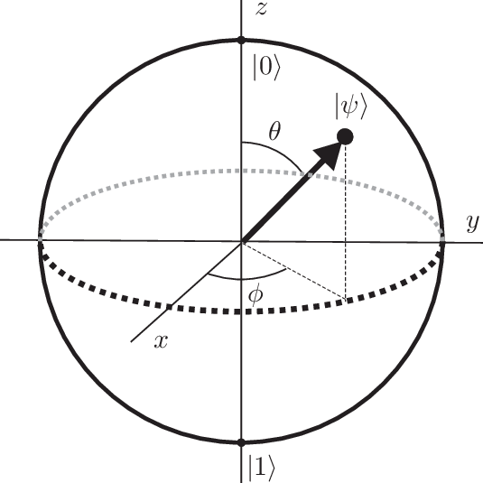
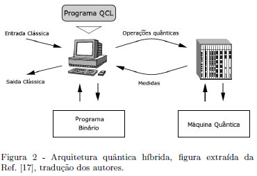
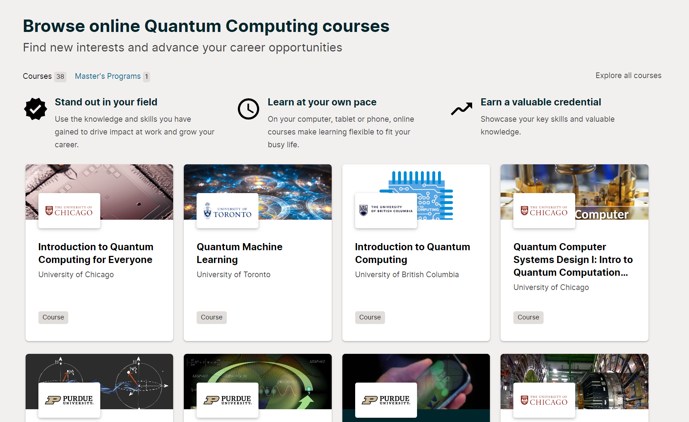
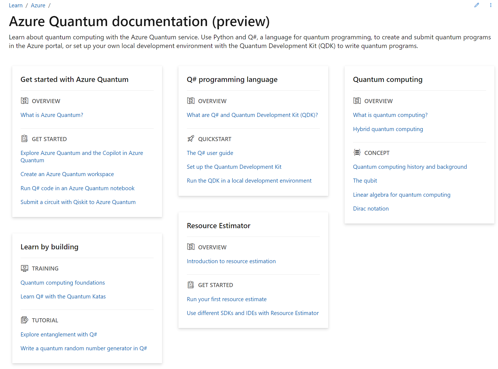

Introdução
Bem-vindo ao Quantum Website, sua porta de entrada para o fascinante mundo da computação quântica! Estamos entusiasmados em guiá-lo por entre os mistérios e promessas dessa revolucionária disciplina, onde os princípios da mecânica quântica transformam a maneira como concebemos o processamento de informações.Prepare-se para mergulhar em um universo onde bits clássicos cedem espaço aos qubits, abrindo portas para uma potência de processamento incomparável. No Quantum Website, buscamos desvendar o extraordinário potencial da computação quântica, desde os fundamentos teóricos até suas aplicações práticas e impacto revolucionário em diversas indústrias.
Seja você um entusiasta, pesquisador ou apenas alguém curioso para entender as complexidades desse campo dinâmico, estamos aqui para compartilhar conhecimento, explorar descobertas recentes e inspirar a próxima geração de inovação quântica. Embarque nesta jornada conosco e descubra como a computação quântica está moldando o futuro da tecnologia.
A computação quântica é uma área revolucionária da ciência da computação que utiliza os princípios da mecânica quântica para processar informações de maneira radicalmente diferente dos computadores clássicos. Enquanto os computadores convencionais utilizam bits clássicos que representam valores binários 0 ou 1, os computadores quânticos usam qubits, unidades fundamentais de informação quântica, que podem existir em estados superpostos, permitindo realizar cálculos em paralelo.

Clique na imagem para abrir
Sobre
O que é Computação Quântica:
A computação quântica é uma abordagem revolucionária para processar informações que utiliza os princípios da mecânica quântica.Enquanto os computadores clássicos usam bits para representar informação como 0s e 1s, a computação quântica utiliza qubits, que podem existir em estados de superposição, permitindo a realização de cálculos em paralelo. Além disso, o fenômeno do emaranhamento quântico possibilita uma correlação instantânea entre qubits, independentemente da distância entre eles.

A animação mostra um dos fundamentos da Computação Quântica - A superposição
Vantagens da Computação Quântica:
| 1. Paralelismo Quântico: | Qubits em estados de superposição podem processar informações em paralelo, o que pode acelerar significativamente a resolução de certos problemas. |
|---|---|
| 2. Efeitos Quânticos Específicos: | Algoritmos quânticos, como o algoritmo de Shor, mostraram-se capazes de fatorar números grandes de maneira mais eficiente do que os algoritmos clássicos, o que tem implicações significativas para a criptografia. |
| 3.Solução Eficiente para Problemas Específicos: | A computação quântica é particularmente promissora para resolver problemas específicos, como otimização, simulação de sistemas quânticos e análise de grandes conjuntos de dados. |
Clique na imagem para abrir

Clique na imagem para abrir
Desvantagens da Computação Quântica em comparação com a computação cássica:
| 1. Correção de Erros: | Os qubits são suscetíveis a erros quânticos devido a interferências externas. Desenvolver técnicas eficazes de correção de erros quânticos é um desafio significativo. |
|---|---|
| 2. Estabilidade dos Qubits: | Manter a coerência quântica por tempo suficiente para realizar cálculos complexos é difícil, pois os qubits podem entrar em colapso para um estado clássico rapidamente |
| 3. Requisitos Técnicos Elevados: | A construção e manutenção de computadores quânticos exigem condições extremamente controladas e temperaturas próximas ao zero absoluto, tornando a implementação prática um desafio. |
| 4. Limitações Atuais: | A computação quântica ainda está em estágio inicial de desenvolvimento, e muitos dos benefícios teóricos só serão alcançados quando sistemas quânticos de grande escala e livre de erros estiverem disponíveis. |

Clique na imagem para abrir
Em resumo,
Enquanto a computação quântica oferece perspectivas emocionantes para resolver problemas complexos, ela ainda enfrenta desafios técnicos significativos antes de se tornar uma realidade prática em larga escala. A pesquisa e o desenvolvimento nesta área estão avançando rapidamente, e o futuro promete avanços notáveis na convergência entre teoria quântica e computação.Você pode encontrar mais informações detalhadas no site Netcraw: "A Computação Quântica E Seus Beneficios"
Ingressar
Como Ingressar na Área de Computação Quântica:
Ingressar na área de computação quântica envolve uma combinação de educação formal, habilidades técnicas, experiências práticas e projetos relevantes. Aqui estão algumas etapas que podem ajudá-lo a entrar nesse campo inovador:| 1. Formação Acadêmica: | Um diploma em ciência da computação, física, engenharia ou campos relacionados é geralmente preferido. Muitos profissionais na área de computação quântica têm mestrado ou doutorado. |
|---|---|
| 2. Conhecimento Básico: | Entenda os princípios fundamentais da física quântica e da teoria da informação quântica. |
| 3. Programação: | Desenvolva habilidades sólidas de programação, especialmente em linguagens como Python e, possivelmente, em linguagens específicas para computação quântica, como Qiskit (para IBM Quantum) ou Cirq (para Google Quantum). |
| 4. Matemática Avançada: | Tenha uma boa compreensão de álgebra linear, cálculo, teoria dos números e probabilidade, pois esses são conceitos fundamentais na computação quântica. |
Recursos Online e Offline para Aprender:
| 1. Cursos Online: | Plataformas como Coursera, edX, Udacity e LinkedIn Learning oferecem cursos em computação quântica. Alguns cursos notáveis incluem "Quantum Computing for Everyone" (IBM Quantum) e "Quantum Mechanics and Quantum Computation" (MIT). |
|---|---|
| 2. Livros: | "Quantum Computation and Quantum Information" de Michael Nielsen e Isaac Chuang é uma leitura clássica. Outros livros recomendados incluem "Quantum Computing: A Gentle Introduction" de Eleanor Rieffel e Wolfgang Polak e "Programming Quantum Computers" de Eric R. Johnston, Nic Harrigan e Mercedes Gimeno-Segovia. |
| 3. Comunidades e eventos: | Participe de comunidades online, como o Stack Exchange Quantum Computing e o Reddit's r/QuantumComputing. Fique atualizado participando de conferências e workshops, como a conferência Qiskit e eventos da Microsoft Quantum. |
Clique na imagem para abrir
Experiências Práticas e Projetos Recomendados:
| 1. Experimente Simuladores Quânticos: | Antes de acessar hardware quântico real, experimente com simuladores quânticos. Plataformas como Qiskit, Cirq e Quipper oferecem ambientes de simulação. |
|---|---|
| 2. Acesso a Hardware Quântico: | Empresas como IBM Quantum e Rigetti oferecem acesso à nuvem para experimentar com processadores quânticos reais. Isso permite que você ganhe experiência prática. |
| 3. Projetos Pessoais: | Desenvolva projetos pessoais para aplicar seus conhecimentos. Isso pode incluir a implementação de algoritmos quânticos simples ou a resolução de problemas específicos usando computação quântica. |
| 4. Colaborações e Estágios: | Considere oportunidades de colaboração ou estágios em laboratórios de pesquisa ou empresas que trabalham com computação quântica. Isso proporciona experiência prática e networking valioso. |
Depoimentos profissionais:
| 1. Empolgação com Inovação: | Muitos profissionais na área de computação quântica expressam uma forte empolgação em serem pioneiros em uma tecnologia que tem o potencial de revolucionar a computação. Eles destacam a oportunidade única de trabalhar em algo que está na vanguarda da inovação tecnológica. |
|---|---|
| 2. Desafios Técnicos Estimulantes: | A maioria dos profissionais reconhece os desafios técnicos significativos na construção de computadores quânticos, mas vê esses desafios como oportunidades de aprendizado e crescimento. A resolução de problemas complexos é uma parte essencial e emocionante do trabalho. |
| 3. Ambiente Colaborativo: | Muitos depoimentos destacam a natureza colaborativa da comunidade de computação quântica. A colaboração é vista como fundamental para superar obstáculos técnicos e impulsionar o desenvolvimento da tecnologia. |
| 4. Evolução Rápida do Campo: | Profissionais mencionam que a computação quântica é um campo em rápida evolução, com avanços frequentes. A necessidade de aprendizado contínuo é destacada, e a capacidade de se adaptar a mudanças rápidas é considerada crucial. |
| 5. Importância da Educação e Conscientização: | Muitos profissionais enfatizam a importância da educação pública sobre a computação quântica. Eles veem a necessidade de aumentar a conscientização sobre os princípios subjacentes e os benefícios potenciais dessa tecnologia. |
| 6. Caminhos Diversificados para Envolvimento: | Depoimentos frequentemente mencionam que há várias maneiras de se envolver na computação quântica, desde a pesquisa acadêmica até o desenvolvimento prático em empresas. Profissionais vêm de origens diversas, incluindo física, ciência da computação e engenharia. |
Guias
Aqui estão alguns guias para ajudálo(a) a começar a aprender:| Brazil Quantum | Instituto Brasileiro de Computação Quântica que faz atividades relacionadas a computação quântica. Clique Aqui |
|---|---|
| Xper Brasil | Uma empresa brasileira de consultoria empresarial que fornece informações detelhadas sobre projetos. Clique Aqui |
| GitHub | Um TCC de um estudante da Universidade Paulista (UNIP) sobre como iniciar a computação quântica. Clique Aqui |
Lembre-se!
A computação quântica é uma área em constante evolução, e a disposição para aprender continuamente é fundamental. Participar ativamente da comunidade e manter-se atualizado com os avanços tecnológicos são aspectos cruciais para ter sucesso nesse campo dinâmico.Praticas
Aplicações Práticas da Computação Quântica:
| 1. Criptografia e Segurança: | A computação quântica pode ter um impacto significativo na criptografia, ameaçando os algoritmos tradicionais. Ao mesmo tempo, também oferece soluções potenciais para comunicações ultra-seguras, por meio de técnicas como a distribuição quântica de chaves. |
|---|---|
| 2. Otimização e Logística: | Algoritmos quânticos têm o potencial de otimizar problemas complexos de logística e planejamento, como roteamento eficiente, distribuição de recursos e gerenciamento de cadeias de suprimentos. |
| 3. Farmacologia e Descoberta de Medicamentos: | Simulações quânticas podem acelerar o processo de descoberta de novos medicamentos, analisando interações moleculares complexas e prevendo propriedades químicas com maior precisão. |
| 4. Finanças e Modelagem Econômica: | A computação quântica pode ser aplicada em simulações financeiras avançadas, modelagem econômica e otimização de portfólio, lidando com grandes conjuntos de dados e cenários complexos. |
| 5. Inteligência Artificial e Machine Learning: | Algoritmos quânticos têm potencial para melhorar a eficiência de certos problemas de aprendizado de máquina, como a busca em grandes bancos de dados e a otimização de funções de custo. |
| >6. Pesquisa em Ciência de Materiais: | Simulações quânticas podem ser usadas para entender melhor as propriedades dos materiais em nível quântico, acelerando a pesquisa e desenvolvimento de novos materiais com propriedades específicas. |
| 7. Simulações de Sistemas Quânticos: | A capacidade de simular sistemas quânticos complexos é uma aplicação intrínseca da computação quântica, sendo útil para entender fenômenos físicos que desafiam os métodos clássicos. |
Clique na imagem para abrir
Estudos de Caso e Exemplos Reais:
| 1. Fatorização de Números: | O algoritmo de Shor, um dos algoritmos quânticos mais conhecidos, pode fatorar números grandes exponencialmente mais rápido do que os algoritmos clássicos. Isso tem implicações para a segurança dos algoritmos de criptografia baseados em fatorização. |
|---|---|
| 2. IBM Quantum Experience: | A IBM oferece acesso à nuvem para processadores quânticos reais por meio do IBM Quantum Experience. Isso permite que pesquisadores e desenvolvedores experimentem a computação quântica na prática. |
| 3. Simulações Quânticas na Indústria de Energia: | Empresas estão explorando simulações quânticas para otimizar a produção de energia, como simulações de reações nucleares para projetos de fusão nuclear. |
Clique na imagem para abrir
Impacto Potencial no Campo da Ciência da Computação:
| 1. Desempenho Exponencial em Certos Problemas: | A computação quântica pode resolver certos problemas exponencialmente mais rápido do que os computadores clássicos, alterando a eficiência de algoritmos em áreas como otimização e fatorização. |
|---|---|
| 2. Evolução de Algoritmos Clássicos: | Alguns algoritmos clássicos podem ser reimaginados e aprimorados usando técnicas quânticas, resultando em algoritmos híbridos que combinam a eficiência de ambos os paradigmas. |
| 3. Desenvolvimento de Ferramentas e Linguagens: | O campo da ciência da computação está evoluindo para fornecer ferramentas e linguagens de programação específicas para computação quântica, como Qiskit, Cirq e Q#. |
| 4. Desafios em Correção de Erros e Algoritmos Quânticos: | A computação quântica apresenta desafios únicos, como correção de erros quânticos. Isso está impulsionando o desenvolvimento de novos métodos e algoritmos para lidar com as peculiaridades quânticas. |
| 5. Integração com Tecnologias Existentes: | O campo da ciência da computação está explorando maneiras de integrar sistemas quânticos com as tecnologias existentes, criando uma infraestrutura de computação mais abrangente. |
Clique na imagem para abrir
A computação quântica está no centro de uma revolução tecnológica, e seu impacto na ciência da computação abrange uma variedade de setores e aplicações. À medida que a tecnologia continua a evoluir, novas possibilidades e desafios emergirão, moldando o futuro da computação.
Estudo de caso com descrições detalhadas

Clique na imagem para abrir

Vídeos sobre computadores quânticos
Desafios e Oportunidades
Desafios atuais na computação quântica:
A computação quântica é uma área de pesquisa empolgante que promete revolucionar a forma como realizamos cálculos complexos. No entanto, existem vários desafios significativos que a comunidade científica está enfrentando na busca por construir e utilizar computadores quânticos práticos e eficazes. Alguns dos desafios atuais incluem:| Decoerência: | Sistemas quânticos são suscetíveis à decoerência, o que significa que eles podem perder informações quânticas para o ambiente circundante. Manter a coerência quântica tempo suficiente para realizar cálculos complexos é um desafio crucial. |
|---|---|
| Erro quântico: | Erros quânticos são inevitáveis em sistemas quânticos devido a vários fatores, como ruído térmico e imperfeições nos qubits. Desenvolver métodos eficazes de correção de erros quânticos é fundamental para construir computadores quânticos robustos e confiáveis. |
| Escalabilidade: | Construir computadores quânticos de grande escala com um grande número de qubits é um desafio técnico significativo. À medida que o número de qubits aumenta, a complexidade dos sistemas quânticos e a necessidade de correção de erros também aumentam. |
| Qubits de alta fidelidade: | A implementação de qubits com alta fidelidade é essencial para realizar cálculos quânticos precisos. Desenvolver qubits com longos tempos de coerência e altas taxas de fidelidade é uma área ativa de pesquisa. |
| Conectividade entre qubits: | Garantir que os qubits em um processador quântico possam se comunicar efetivamente uns com os outros é um desafio. A conectividade entre qubits é crucial para realizar operações quânticas complexas. |
| Desenvolvimento de algoritmos quânticos: | Embora alguns algoritmos quânticos, como o algoritmo de Shor e o algoritmo de Grover, sejam conhecidos por oferecer vantagens significativas sobre seus equivalentes clássicos, ainda há muito a ser explorado na criação de novos algoritmos e na adaptação de algoritmos clássicos para o paradigma quântico. |
| Material e design de qubits: | Encontrar materiais adequados para a construção de qubits e desenvolver designs eficientes são desafios importantes. Diferentes tecnologias, como supercondutores, íons aprisionados e pontos quânticos, apresentam desafios específicos nesse sentido. |
| Questões de segurança: | Com o potencial de algoritmos quânticos para quebrar sistemas de criptografia amplamente utilizados hoje em dia (como o RSA), a transição para algoritmos quântico-seguros é um desafio importante. |
Oportunidades de pesquisa e desenvolvimento:
A pesquisa e desenvolvimento (P&D) em computação quântica oferece várias oportunidades empolgantes em diversas áreas. Aqui estão algumas das principais oportunidades de pesquisa e desenvolvimento nesta área:| Algoritmos Quânticos: | Explorar e desenvolver novos algoritmos quânticos para resolver problemas específicos de maneira mais eficiente do que algoritmos clássicos. Isso inclui adaptação de algoritmos clássicos para o paradigma quântico e a descoberta de novos algoritmos que exploram as capacidades únicas dos computadores quânticos. |
|---|---|
| Correção de Erros Quânticos: | Desenvolver e aprimorar técnicas de correção de erros quânticos. Isso é crucial para tornar os computadores quânticos mais robustos e confiáveis, especialmente à medida que aumenta o número de qubits e a complexidade dos cálculos. |
| Arquiteturas de Computadores Quânticos: | Projetar arquiteturas eficientes para computadores quânticos, levando em consideração fatores como conectividade entre qubits, escalabilidade e facilidade de implementação. Isso inclui o desenvolvimento de técnicas para minimizar a decoerência e melhorar a fidelidade dos qubits. |
| Hardware Quântico: | Pesquisar e desenvolver novas tecnologias e materiais para a implementação de qubits. Isso envolve explorar diferentes abordagens, como supercondutores, íons aprisionados, topologia quântica e pontos quânticos, e otimizar seu desempenho. |
| Comunicação Quântica: | Desenvolver tecnologias para comunicação quântica segura e eficiente. Isso é crucial para garantir a segurança da comunicação em um mundo onde os computadores quânticos podem quebrar algoritmos de criptografia convencionais. |
| Aplicações Práticas: | Identificar e explorar aplicações práticas para computação quântica em diversas áreas, como simulação de sistemas quânticos, otimização, aprendizado de máquina quântico, modelagem molecular e criptografia pós-quântica. |
| Educação e Treinamento: | Desenvolver programas educacionais e treinamentos para capacitar a próxima geração de cientistas e engenheiros em computação quântica. Isso inclui cursos acadêmicos, tutoriais online, programas de estágio e parcerias com a indústria. |
| Padrões e Protocolos: | Estabelecer padrões e protocolos para garantir a interoperabilidade entre diferentes sistemas quânticos e facilitar o desenvolvimento de uma infraestrutura quântica global. |
| Integração com Tecnologias Existentes: | Explorar maneiras de integrar computação quântica com as tecnologias de computação clássica existentes. Isso pode envolver a criação de interfaces eficientes entre sistemas quânticos e clássicos, bem como o desenvolvimento de algoritmos híbridos. |
| Ética e Segurança: | Investigar questões éticas relacionadas à computação quântica, como o impacto na segurança da informação e na privacidade, e desenvolver diretrizes éticas para o uso responsável dessa tecnologia. |
Como os profissionais podem contribuir para avanços na área:
Profissionais de diversas áreas podem contribuir significativamente para avanços na computação quântica. Aqui estão algumas maneiras pelas quais diferentes tipos de profissionais podem desempenhar um papel crucial:| 1. Cientistas da Computação e Programadores: | Desenvolver algoritmos quânticos: Criar e otimizar algoritmos para processadores quânticos, explorando as vantagens do paradigma quântico em relação aos problemas específicos. | Correção de erros: Contribuir para técnicas de correção de erros quânticos, desenvolvendo códigos e protocolos para garantir a robustez dos cálculos quânticos. |
|---|---|---|
| 2. Físicos: | Projeto de hardware: Trabalhar no desenvolvimento e aprimoramento de qubits e arquiteturas de hardware quântico, explorando diferentes tecnologias como supercondutores, íons aprisionados e topologia quântica. | Estudo de fenômenos quânticos: Investigar fenômenos quânticos fundamentais que podem ser explorados para melhorar o desempenho de sistemas quânticos. |
| 3. Engenheiros: | Implementação de hardware: Projetar e construir sistemas quânticos, lidando com desafios práticos de engenharia, como controle preciso de qubits, minimização de interferências e resfriamento eficiente. | Integração com sistemas clássicos: Trabalhar na integração de sistemas quânticos com tecnologias de computação clássica existentes. |
| 4. Matemáticos: | Teoria quântica da informação: Desenvolver novas teorias e ferramentas matemáticas para compreender e modelar sistemas quânticos, contribuindo para o avanço da teoria quântica da informação. | Algoritmos quânticos: Colaborar no desenvolvimento de algoritmos quânticos, analisando sua eficiência e aplicabilidade. |
| 5. Especialistas em Criptografia: | Criptografia pós-quântica: Trabalhar no desenvolvimento de métodos de criptografia resistentes a ataques de computadores quânticos, contribuindo para a segurança da comunicação futura. | --- |
| 6. Especialistas em Segurança da Informação: | Avaliação de segurança: Avaliar e fortalecer a segurança de sistemas quânticos e suas aplicações, identificando potenciais vulnerabilidades e desenvolvendo estratégias para mitigá-las. | --- |
| 7. Profissionais de Educação: | Formação e treinamento: Desenvolver programas educacionais para capacitar futuros profissionais em computação quântica, desde cursos universitários até programas de treinamento profissional. | --- |
| 8. Éticos e Filósofos da Tecnologia: | Orientação ética: Contribuir para discussões sobre os impactos éticos da computação quântica, ajudando a estabelecer diretrizes éticas para o desenvolvimento e uso responsável dessa tecnologia. | --- |
| 9. Empresários e Gestores de Inovação: | Investimento e parcerias: Apoiar financeiramente e colaborar com iniciativas de pesquisa em computação quântica, estimulando o desenvolvimento de tecnologias e aplicações práticas. | --- |
| 10. Advogados Especializados em Propriedade Intelectual: | Proteção de patentes: Auxiliar na proteção de novas tecnologias e inovações em computação quântica por meio de processos de patentes. | --- |
Seção de oportunidades para engajamento:
O engajamento na área de computação quântica pode ocorrer de diversas maneiras, envolvendo colaboração, aprendizado e participação ativa. Aqui estão algumas oportunidades para engajamento:| Participação em Comunidades Online: | Junte-se a fóruns e comunidades online dedicados à computação quântica. Plataformas como Reddit, Stack Exchange e outras oferecem espaços para discussões, perguntas e respostas. |
|---|---|
| Participação em Conferências e Eventos: | Participe de conferências, workshops e eventos relacionados à computação quântica. Isso proporciona oportunidades de networking, aprendizado e intercâmbio de ideias. |
| Cursos Online e Presenciais: | Matricule-se em cursos online ou presenciais sobre computação quântica. Várias instituições e plataformas oferecem cursos para profissionais de diferentes níveis de experiência. |
| Hackathons e Competições: | Envolva-se em hackathons e competições relacionadas à computação quântica. Esses eventos oferecem a oportunidade de aplicar habilidades práticas e resolver desafios específicos. |
| Colaboração em Projetos de Código Aberto: | Contribua para projetos de código aberto na área de computação quântica. Plataformas como GitHub abrigam projetos onde você pode colaborar e aprender com outros desenvolvedores. |
| Programas de Estágio e Bolsas de Pesquisa: | Busque programas de estágio em laboratórios de pesquisa ou empresas que estejam ativamente envolvidos em projetos de computação quântica. Muitos oferecem oportunidades de aprendizado prático. |
| Participação em Iniciativas Acadêmicas: | Colabore com instituições acadêmicas envolvidas em pesquisas de ponta em computação quântica. Isso pode incluir projetos de pesquisa conjunta ou a participação em programas de pós-graduação. |
| Eventos de Networking: | Participe de eventos de networking específicos para a área de computação quântica. Conhecer outros profissionais, pesquisadores e empresas pode abrir portas para oportunidades futuras. |
| Leitura de Literatura Científica: | Mantenha-se atualizado com a literatura científica na área. A leitura de artigos, revistas e livros acadêmicos é crucial para entender os avanços mais recentes e as tendências na computação quântica. |
| Participação em Desafios e Programas de Inovação: | Envolva-se em desafios e programas de inovação que buscam soluções criativas na aplicação da computação quântica para resolver problemas do mundo real. |
| Formação de Grupos de Estudo: | Crie ou participe de grupos de estudo locais ou online para discutir tópicos relacionados à computação quântica. A troca de conhecimento entre membros pode ser enriquecedora. |
| Mentoria e Aconselhamento: | Busque mentoria de profissionais experientes na área. Eles podem fornecer insights valiosos, orientação na carreira e compartilhar experiências. |

Entendendo a Matemática por Trás da Computação Quântica:
A compreensão dos conceitos matemáticos fundamentais é essencial para quem deseja explorar a computação quântica, pois ela se baseia fortemente em princípios matemáticos avançados. Abaixo estão alguns dos conceitos matemáticos fundamentais na teoria quântica e na computação quântica:Conceitos matemáticos fundamentais:
| 1. Espaços Vetoriais: | Qubits, as unidades fundamentais de informação quântica, são representados por vetores em um espaço vetorial complexo. |
|---|---|
| 2. Notação de Dirac (Bra-Ket): | Desenvolvida por Paul Dirac, essa notação é amplamente usada na teoria quântica para representar vetores de estado e operadores. Um vetor de estado é representado por um "ket" (|ψ⟩) e seu conjugado transposto, chamado "bra" (⟨ψ|), é usado para representar o conjugado complexo do vetor. |
| 3. Matrizes e Operadores Lineares: | Operadores lineares, representados por matrizes, desempenham um papel crucial na computação quântica. Operadores quânticos são usados para representar transformações em qubits. |
| 4. Produto Tensorial: | É utilizado para combinar sistemas quânticos. O produto tensorial de espaços vetoriais representa o espaço vetorial do sistema combinado. |
| 5. Medição Quântica: | A teoria quântica inclui postulados sobre como as medições afetam os estados quânticos. A probabilidade de um resultado específico está relacionada ao produto interno dos estados envolvidos. |
| 6. Teorema da Decomposição Espectral: | Permite expressar um operador linear como uma combinação linear de projeções sobre os autovetores desse operador. Isso é crucial na análise de operadores quânticos. |
| 7. Estados Emaranhados: | A noção de emaranhamento, onde dois ou mais qubits estão intrinsecamente correlacionados, é central na computação quântica. A representação matemática envolve estados que não podem ser fatorados nos estados individuais dos qubits. |
| 8. Princípio da Incerteza de Heisenberg: | Afirma que não é possível conhecer precisamente a posição e a quantidade de movimento de uma partícula ao mesmo tempo. Isso tem implicações importantes na teoria quântica e na formulação de algoritmos quânticos. |
| 9. Teoria da Informação Quântica: | Analogia à entropia na teoria da informação clássica, a entropia quântica mede a quantidade de informação quântica contida em um sistema. |
| 10. Transformada de Fourier Quântica: | Assim como na teoria clássica, a transformada de Fourier quântica é uma ferramenta importante na computação quântica, sendo fundamental em algoritmos como o algoritmo de Shor. |
| 11. Princípio da Superposição: | Afirma que um sistema quântico pode existir em múltiplos estados simultaneamente. A representação matemática envolve combinações lineares de estados. |
Exemplos Práticos:
| 1. Espaços Vetoriais: | Um qubit |ψ⟩ = α|0⟩ + β|1⟩, onde α e β são números complexos e |0⟩ e |1⟩ são os vetores de base canônica do espaço vetorial. |
|---|---|
| 2. Notação de Dirac (Bra-Ket): | O produto interno entre dois estados quânticos |ψ⟩ e |φ⟩ é denotado por ⟨ψ|φ⟩, e a probabilidade de medir |φ⟩ em |ψ⟩ é dada por |⟨φ|ψ⟩|²> |
| 3. Teorema da Decomposição Espectral: | Um operador quântico pode ser decomposto em uma soma ponderada de projeções em seus autovetores, facilitando sua análise e manipulação. |
| 4. Princípio da Incerteza de Heisenberg: | A posição e o momento de uma partícula quântica não podem ser conhecidos simultaneamente com precisão ilimitada, conforme expresso pela relação de incerteza de Heisenberg. |
| 5. Transformada de Fourier Quântica: | O algoritmo de Fourier quântico é utilizado para realizar transformadas de Fourier de forma eficiente em computadores quânticos, sendo fundamental em diversas aplicações. |
| 6. Princípio da Superposição: | Circuitos quânticos envolvem a aplicação de portas quânticas para manipular estados quânticos, explorando a superposição para realizar cálculos paralelos. |
Tutoriais:
| Coursera |  Uma plataforma de cursos com incrição gratuíta. É necessário fazer a inscrição para ter acesso a mais de 5000 cursos diferentes com vários orientadores. |
|---|---|
| edX |  Um portal de informações sobre a computação quântica, com cursos online recomendados. |
| IBM | Um dos sites mais reconhecidos quando se trata de tecnologia. Faça a incrição e então poderá acessar os conteúdos para te ajudar a estudar utilizando as aplicações fornecidas. |
| Qiskit |  Forúm com informações de estudo aplicado contendo circuitos comuns e avançados e operadores de computação quântica. |
| Microsoft |  Saiba mais sobre a computação quântica com o serviço Azure Quantum. Utilize Python e Q#, uma linguagem para programação quântica, para criar e submeter programas quânticos no portal Azure, ou configure o seu próprio ambiente de desenvolvimento local com o Quantum Development Kit (QDK) para escrever programas quânticos. |